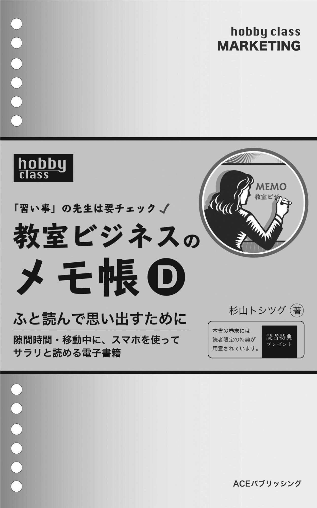
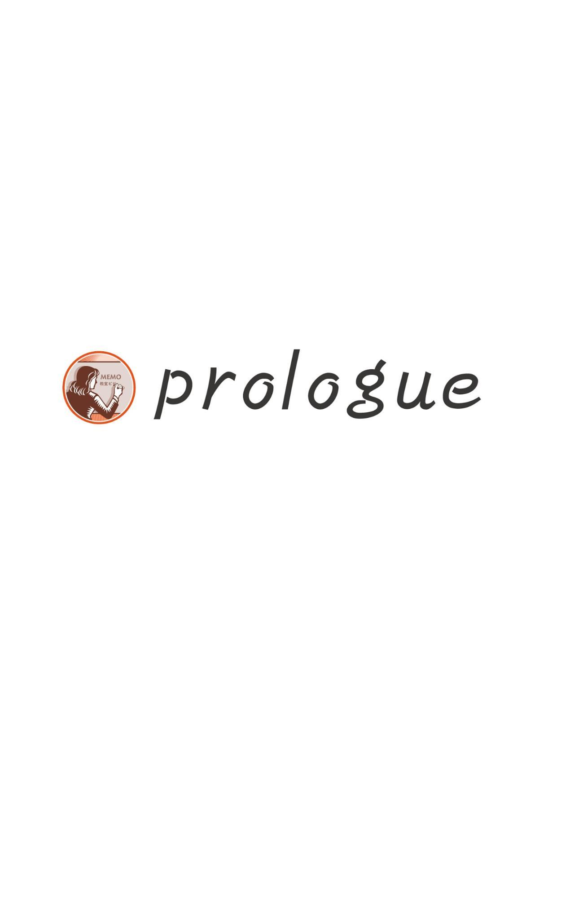
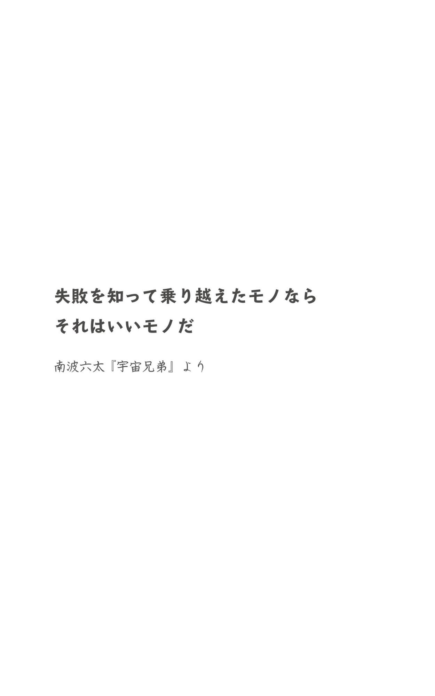
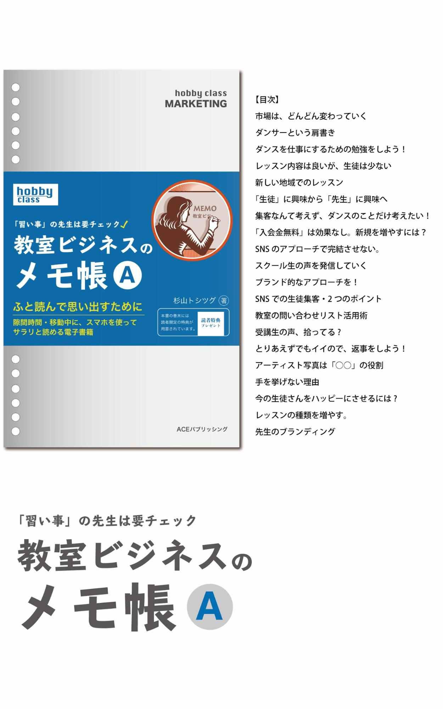
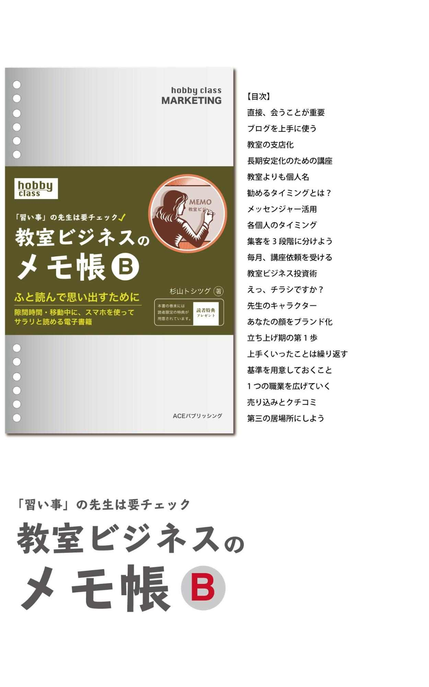
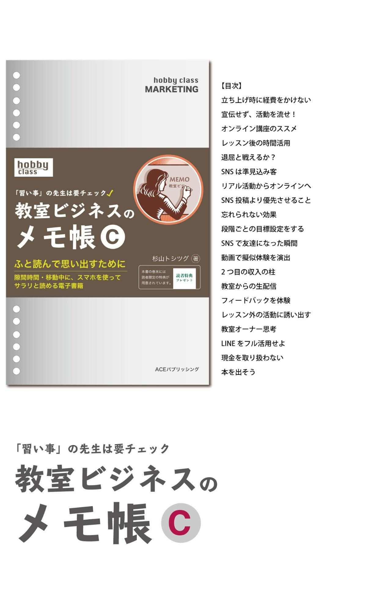
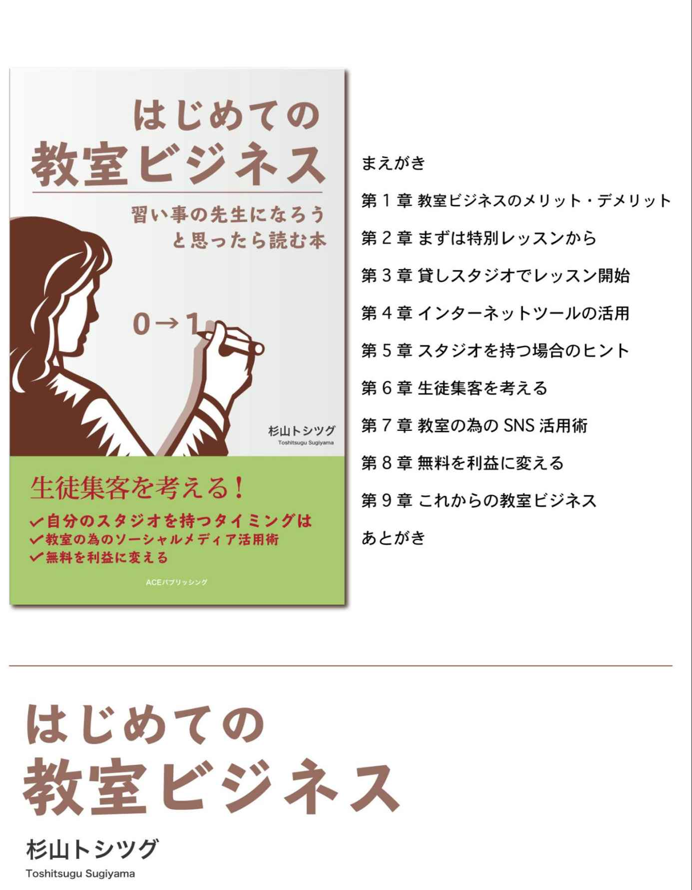
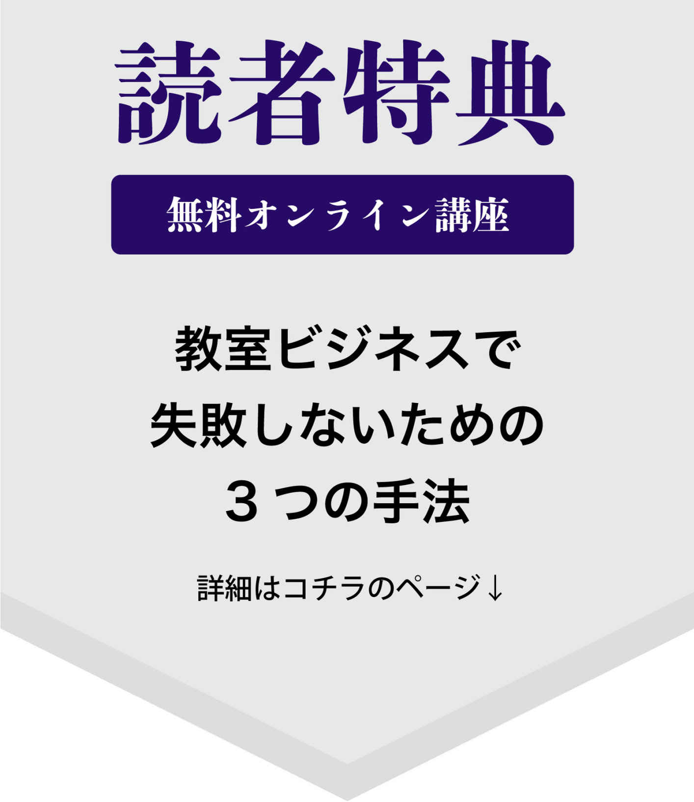
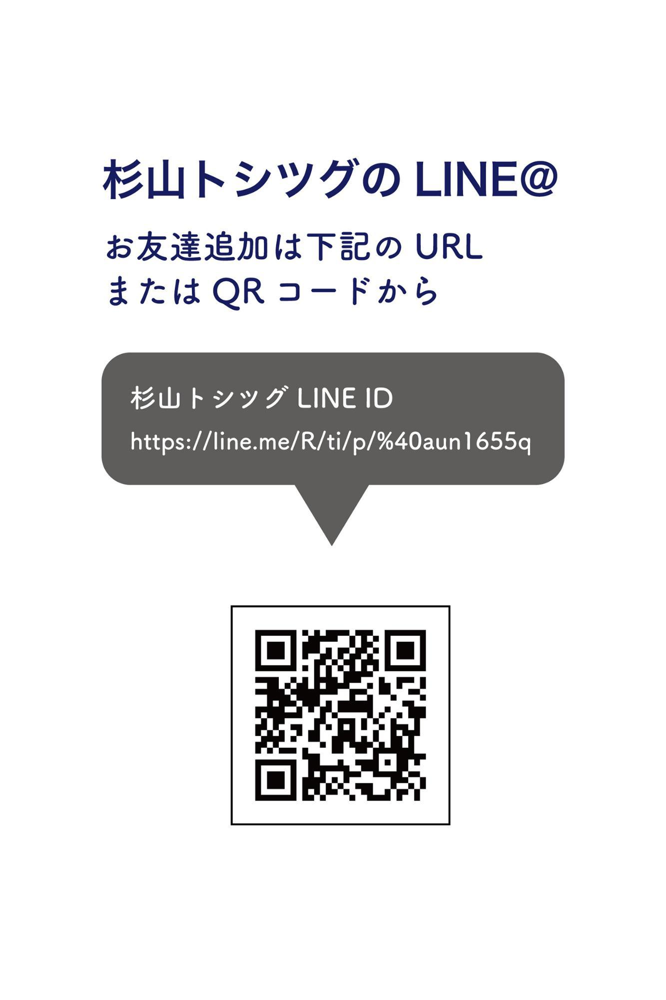

| 教室ビジネスのメモ帳D | |
| 杉山トシツグ | |
| UNKNOWN (2018) | |

横書き表示について
本作品は、横書き表示での観覧を推奨いたします。
横書き表示にした際には、表示が一部崩れる恐れがあります。
ご利用になるブラウザまたはビューワにより、表示が異なることがあります。

「この仕事、まるで遊んでるみたい」
私が教室ビジネスを始めた時の感想でした。
そもそもは、趣味だったことなので、それが仕事になると趣味と仕事の境界線がなくなります。
なので、教室以外でも生徒の練習に付き合ったり、一緒に考えたりという事も、全く気にならず、自分から率先して参加してきました。
別に、お金をもらわなくても、楽しいので続けました。
そもそも、仕事という感覚がありません。
しかし、長く続けていくと、それなりに悩みも出てきます。
教室を始めた時は、ほとんど同業者もおらず、独占状態だったこともあり、特に集客に苦労する事はなかったと思います。
しかし市場が大きくなるにつれて、同業者が増えていきます。
一時期は、生徒の3分の2が移動するということもありました。
○ 悩むのは、ビジネス面
特に今の時代、誰もが簡単に始められる分、同業者も多い状態です。
それだけに、仕事としてなり立てていく上で、ビジネスの勉強というものが必要となるでしょう。
だからといって、難しいマーケティングの本やビジネスの勉強ばかりしていると、今の仕事自体が楽しくなくなります。
なので、ビジネスの勉強に埋まるのではなく、少しずつ始めていけば良いのではないかと思います。
そういった意味でも、この教室ビジネスのメモ帳シリーズは、分かりやすく短い内容でサクっと読めるようになっているので、入門編としての役割は果たしていると思います。
本書の中では、メモ帳シリーズの各項目を
それぞれ紹介しています。
楽しく教室ビジネスを進めていく上での、あなたの入門書となれば嬉しいです。
それでは、本書の内容を読み進めてみてください。
杉山トシツグ
目次
教室側がSNSに投稿するのではなく、相手が投稿することで知られるようにすることを考えた方が良いでしょう。
多くの方がSNSを使って情報発信者になっているので、いかにそこに使ってもらえるかを意識するべきなのです。
では、相手が投稿したくなるには？
を考える必要があります。
インスタ映えという言葉がありますが、多くの方は投稿する為のネタを探しています。
例えば、
教室の一角に、写真撮影スペースを作ったり、講座の中で撮影タイムを作るのも良いでしょう。
何かしらの、撮影する機会を増やしていくべきでしょう。
私が教室をしていた時の経験では
動画は嫌がるが写真はオッケーというパターンが多く見うけられました。
動画の方が情報量が多いので動画が良かっのですが、そういった傾向も分かったので、画像の方で「生徒さんを巻き込んで何か始めることができないかな」と考えていました。
その時に思い立ったもので「教室の告知用バナーを作るので、みんな協力して」と言って参加してもらったことがあります。
一眼レフで撮って、全員を右寄せで撮影、左側にはタイトルやキャッチフレーズを差し込んで画像を作ったのです。
生徒巻き込み型のバナーですね。
そういったものを巻き込んで作っていく事も自分の教室の活動の1つとして取り込んで、教室の個性にしたのを覚えています。
あなたが、好きなこと、したいことを
他人が欲しがるものに繋げなければいけません。
もちろん情熱も必要ですが、それだけではいけないという事です。
私も、この部分で失敗した経験があります。
例えば、こういった本の出版です。
ダンス教室のビジネスに関する書籍を作っていたのですが、それは自分がしたいことであって、必ずしもそこに需要があるわけではなかったのです。
そもそも、ニーズが無いところに集中していたと言うこと。
自分自身が経験して助かったことなので、良かれと思って始めましたが、そこにニーズがあるわけではなく、市場としても小さい。
そう思ったので、その後の方向性を考え直し、軌道修正しました。
「木を見て、森を見ず」という言葉がありますが、まさにその状態に陥っていたのです。
もっと、抽象度をあげて
ダンス教室ビジネスという狭い市場から、今は教室ビジネスにフォーカスするようになりました。
ダンス教室ビジネスでは、全6冊を出したので、その経験をベースとして、次の展開（教室ビジネス）を考えていくように変えたのです。
最初から何もかもうまくいったり、答えを出せるわけではありません。
途中で気づいてでもいいので、軌道修正をしながら進んでいくことが大切かと思います。
教室で受付を用意しているところはありますが、受付が無くても回る仕組みを作れたらいいですよね。
私の場合は、スタジオに入ってすぐ受付用紙を置いておいて、記入してもらうのを1つの流れとして取り入れていました。
受付の記入は、とても簡単なもので、
月の初めに、名前と○を書いて
後は毎週その用紙の日付の部分に◯を書くだけです。
教える側の先生は、レッスンや講座を始まる前に数を数えるだけ。
学校の出欠をとる時みたい感じですが、基本的には名前を呼ばず人数を数えるだけです。
レッスン費の回収は、その用紙を使いながら行います。
回収した人には、名前の番号の部分に○をしていくのですが、ここに勝手に○をする人が出てきました。
ここに◯をすると、月謝を支払ったことになるので良くありません。
また受講生が多くなると分かりにくくなるので、それを防止するために、赤ペンを使うようにして、赤ペンは一緒に置かないようにしておきます。
これで一旦、問題は無くなりました。
受付を雇えば良いのでしょうが、個人でやっているので、雇う余裕もなく、自分で管理しなければいけません。
とはいっても、、その用紙1枚で、20年近くやってきたので問題はないのです。
今だったら、簡単に導入できる決済サービスが出ているので、そのサービスを導入して定額制にしていると思います。
amazonで何かを買う際に、レビューを参考にしませんか？
皆さんしていると思うのですが、私もやはりレビューは、めちゃめちゃ読みます。
そうなんですね。今はそういったレビューを読んだり、他の人の感想や購入した人の様子を見て、買うか買わないかを決めます。
そして誰から買うのかということも重要になってきます。
ソーシャルメディアによって、その人の情報が簡単に分かるようになりました。
投稿もそうなのですが、コメント欄もレビューと同じくらい見られているので
コメントも多くの人がチェックしているという意識を持っていった方が良いでしょう。
コメントを無視していると、そういう事も伝わるので要注意です。
「あ、この人は無視する人なんだ」というイメージが付いてしまい、無視されたくないので、コメントをしなくなります。
フォロワーが増えて、コメントが多くなった場合、全てのコメントに返事をしようとまでは言いませんが、自らコメント返していくという姿勢は見せていた方が良いでしょうね。
そもそもコメントの返事が追いつかなくなるほど、フォロワーが増えると嬉しいですが。
その点、有名人はコメント数が大量に入ってくるので大変だな〜と思いながら見ています。
他人のチャットを見ている感覚というか、親近感が湧く効果がありますね。
教室を始める、またはそれ以外の事にも通じるのですが、まず最初は「行動量」が決め手となります。
行動を起こすから精度も上がる。
量をこなすから、質も良くなってくる。
時間は限られているので、その限られた時間の中で量をこなすには、スピードが大切になります。
なので、最初の課題は「スピードアップ」です。
当然はじめてチャレンジするものは、慣れていないので、スピードもなかなか出せません。
そのためには、それをこなすことにフォーカスする必要があります。
つまり、自分が持ってる時間を全部注ぎ込むという事です。
例えば、私はフォーカスする為に、プライベートの時間を捨てることでした。
仮に、それがスキルアップであれば、すべての時間をスキルアップに注ぎ込みます。
それが、ビジネス集客であれば、ビジネスの勉強に注ぎ込みます。
こんな事を言ってると、なにか偉そうに聞こえるかもしれませんが
実際に、実践をしてきて自分自身が実感したことでもあります。
今おこなっている出版も同じです。
最初は、隙間時間や空き時間を利用して原稿書いていたのですが
月に出版できるペースが月に1冊。
「これじゃいかん！」と思って、自分の時間を出版作業に注ぎ込み、出版作業をメインにおきました。
すると、1ヵ月に5〜6冊出せるようになり、フォーカスすると事で、そのスピードは5倍になりました。
何事も初速が大切だということをけいけんしました。

教室はビジネスモデルの中でも会員制ビジネスに当たります。
毎月、新規のお客さんを見つけるわけではなく、月謝としてある程度の決まった金額が支払われます。
レンタルでスタジオ貸りることができれば、カラダ1つで働けるので、毎月かかる経費も少なくて済みます。
ビジネスとしては、わりと理想的なモデルと言えるかもしれません。
一度、通い始めると
ある程度の期間は通い続けることが想定できるので、入会時が大切です。
教室ビジネスで特に重要になるのは教室の収容人数とレンタル料金とのバランスでしょう。
小さい（狭い）スタジオでは、ビジネスとして成り立ちません。
いくらレンタル料金が安かろうが、収容人数に限りがあると、その教室ビジネスは難しくなります。
10人しか入れない場所であると、10人分の月謝しかもらえません。
15人の場所であると15人分の月謝しかもらえません。
常にその収容人数によって、収入の限界が決められてしまいます。
では、既にスタジオ始めた人は、どういった対応とるべきでしょうか？
それは、月謝以外からの、収入源を考える必要があります。
月謝とは別にオプション料金として、何か新しい収益モデルを考えるのです。
例えば、教材ツールや資格取得などのオプション料金といったものです。
目標は、長期目標と短期目標を決めるのが良いと言われており、特に開始当初の最初の目標（短期目標）は、とても重要になると思います。
最初に頑張る！
これは本当に重要で、言い方を変えると「大量行動」とも言えます。
生徒数も、まずは10人くらいからのスタートを目標にするのがいいと思います。
その為にはスピードが大切で
そこから、ある程度の人数が集まれば、それぞれ相乗効果を生み出すので楽になります。
一定の人数がいれば、さらに生徒数は増えやすくなるということです。
10人しかいない中で2人増やすのと
50人いる中で2人増やすのでは、50人の方が楽なのは分かりますよね。
なので、できるだけ早く楽になるために、母数を増やすのです。
この最初のスピードを上げるために行う方法の1つが「広告を出す」ことです。
多くの方が勘違いするのですが、上手くいったら広告を出そうとします。
それは上手くいくと広告を出す予算も出来るので、その予算を使って広告を出すと考えるのですが、広告を使わず自力で進めていくと、それだけ時間がかかることになります。
時間がかかるという事は、それまでにスタジオ代や、生活費などの維持費がかかると言うことです。
いずれ広告費を使うのであれば、それを前倒しにして、広告を活用し楽になってから自力でやっていく。
こちらが正しいやり方と言えます。
ビジネスには、こういった言葉があります。
お金持ちは前払いビジネス、貧乏は後払いビジネス。
上手にビジネスを回すのであれば、前払いビジネスに徹底しましょう。
例えば、月謝です。
これを前払いにしておかなければ、面倒なことがおきます。
レッスンに参加しても月謝を払われないまま、休んでしまったりする生徒が出てくるのです。
実際に何人もいましたが、そのまま辞めてしまう人もいたりして、未払いを回収するのが非常に大変です。
メールを送ったり、時には電話をしたり、または銀行の振込先を伝えたり、持って来てもらう約束をしたりと、大変手間がかかったのを覚えています。
自分一人で講師をしていた時に、こういった大変な経験をして
担当よ先生にレッスンを任せるようになると更に大変なことが予想できたので、前払いでの受け取りを徹底しました。
月謝の場合、レッスン前に月謝を払い終えないとレッスンには参加できない。
または、1レッスンで参加していただき、足らない分を翌週持ってきてもらうというように徹底しました。
そうしなければ、逆に回収が大変になるからです。
厳しいようですが、ここまでしないと続けていくことが凄く大変になります。
今だったら、毎月引き落としされる決済サービスを使うでしょうし、簡単に導入できるサービスも数多く多く出て来ています。
見学に来た人と実際に話をしていると
通うつもり満々で好印象だったが、いざとなると通わないというパターンもあります。
これは見学後、一度帰宅して落ち着いて考えて「まだやめとこう」といった意思決定をされたからかもしれません。
あれだけ会話が盛り上がったのに、いざ蓋を開けてみると予想外。
こういった結果を避けるために、1つ良い方法があります。
それは、仮の入会用紙に記入してもらうことです。
仮なので、絶対に入会しないといけないというわけではありません。
そういった部分をしっかり説明し、仮申し込み用紙の中にも説明を載せておくようにしときます。
人間には、一貫性の法則というものがあって、一度軽くでも約束したものは、できるだけ守ろうとします。
同時に、この仮申し込み用紙に記入する上でのメリットも必要です。
見学に来て人に対しては以前、以前行われていたキャンペーンが適用され、入会金がディスカウントされる。
また体験レッスンに参加された方は、体験レッスンを受けた分が差し引かれる。
このように、仮申し込み用紙に提出するだけでメリットになる条件をつけることが大切です。
相手にプレッシャーがなく、お得な特典を取り入れていくことで、軽い一歩を踏み出してもらいます。
教室を長く続けていると、昔通っていた生徒とばったり街中で会うような経験もします。
そういった時に、なりがちなのがよそよそしい態度で「どうも」程度の挨拶です。
これは、やめましょう。
気づかない振りをする人もいますが
こちらが気づいているという事は、大体が向こうも気づいています。
あなたがするべきは、あなたから話しかけることです。
向こうからすると話しかけられるという事は教室の宣伝をされると思っているので、教室の宣伝はし一切しません。
普通に会話をしてください。
教室の話に一切触れなかった場合、向こうから教室の話題を振ってくることがあります。
そうした時は、あなたは教室の情報を伝えたり話をしてください。
そうなったとしても、レッスンの時間帯や曜日等の話には触れないようにします。
ただ、最近起こっている楽しいことや、みんなと経験したことなどを話します。
そして仮に、向こうから
「今レッスンは何時からしてますか？」
「前と同じなんですか?」
といった質問が来たら、あなたは答えて下さい。
相手から質問してくるという事は、また通い始める可能性があります。
そういった質問が来るまでは
くれぐれも、こちらからは言わないように。
もし向こうからそういった具体的な質問がなかったら、そもそもその人は通う事はないでしょう。
楽しく会話ができたということで、その場は終わらせてください。
第2章で紹介した内容は
「教室ビジネスのメモ帳A」の内容を一部紹介したものです。
もし興味がありましたら、是非そちらの本も参考にしてみて下さい。
https://www.amazon.co.jp/dp/B07GN9KJKR

教室を始めるのであれば、希望は小さく様々な場所で始めることから考えた方が良いです。
レンタルスタジオで安く借りられるところがあれば尚更。
とはいっても、安く借りられるところが見つかったから貸りるという基準ではなく
自分のスタジオを始めることを見据えて、計画的に進めていきます。
自分の教室を（本店）を持とうと思っているのであれば、それを囲むような感じでエリアを広げていきましょう。
計画的に進めた方が、本店を始めるタイミングの時に非常に進めやすくなるからです。
エリアを広げる戦略＝エリア展開については
著書『初めての教室ビジネス」に詳しく書いてあるので参考にしてください。
https://www.amazon.co.jp/dp/B07G6V21MX/ref=nodl_
支店といっても、やはり集客は難しいです。
まず、その考えているエリアに誰か知り合いがいたら、その知り合いに相談してみましょう。
その時に通いたいという人が見つかったら、その人に近づくのが良いでしょう。
スタジオ探しよりも、人探しに力を入れていくべきです。
何もかも自分1人からスタートさせるのは難しいので、まずは1人でも良いので、協力者を見つけていくことが最初の行動になります。
何かサービスを進める場合、その進める良いタイミングというものがあります。
前提として、全く何も購入していない人に勧めるのは難しいでしょう。
例えば
・体験講座に参加した人
・体験講座に参加しなかった人
この2人に同じサービスを勧めるのであれば、講座に参加した人の方が圧倒的に簡単なのです。
それは一度、購入したというステージに入っているからです。
購入した人はお金を使っている＝残った資金が少ない。
これに比べて、購入していない人はまだ資金に余裕がある
と思ってしまいがちですが、これは違います。
扉をがっちりロックして話をしている人と、扉を開けて話をしている人との違いくらいあります。
教室であれば、大建工業さんに参加した直後や入会した直後に、さらなるサービスを進めるのがタイミングとしては正しいと思います。
だからといって良くないものを進めてはいけません。本当にその人にとって良いもの、オススメできるものであれば、このタイミングで進める事は良いでしょう。
私の場合は、膝サポーターです。
ダンス教室をしていたので、振り付けの中で膝を着ける動きがあるのですが、これを繰り返し練習していくと膝が痛くなります。
なので、膝サポーターを勧めたりしていました。
このように本当に進めたいものがあれば、タイミングを合わせて進めるのが良いでしょう。
芸能界で活躍している人が
独自の個性を＝キャラクターを持っていることと同じように、先生もキャラクターを持つ必要があります。
ただ単に技術を伝える、教えるというだけではなく、どういった先生から教わるのかということが重要になります。
どういった先生と言うのは、どういったキャラクターの先生かということです。
実力と同時に、人気も必要なのです。
私が教室を行っていた時に、何人かの先生にレッスンを任せていたのですが
必ずしも実力がある先生が一番人気があったわけではありません。
先生の1人で、大会で優勝したり、メディアで紹介されたり、ゲストとしていろんな大会で呼ばれる先生がいたのですが、教室での 1番人気は無名の先生でした。
その先生が他の先生より抜きんでていたものは、面倒見の良さ、明るさ、情報発信の量の３つです。
では実力ナンバーワンの先生はどういった感じだったのでしょうか。
その先生には、上手な少人数の生徒がつくようになります。
なので、自分がしたいことを優先的にやっていたんですね。そうなるとやはり通うタイプの生徒は偏ってしまいます。
仕事としてビジネスとしてやっていくのであれば、自分の好きなことを押し通すだけではなく、その次に通う人の特徴を照らし合わせて上手くブレンドさせていく必要があるでしょう。
教室ビジネスを立ち上げる際に、ホームページ等は必要ありません。
ハッキリ言ってFacebookページだけで良いでしょう。なぜなら、まだ上手くいくかどうかが分からないからです。
時間とお金をかけてホームページを作っても、結局その事業が上手くいかなければ必要が無くなります。
であれば、手軽に始められるFacebookページを作って様子を見ながら進めていく方が良いわけです。
そもそも、ホームページを作る際にはページに載せる材料が必要となります。
その中には、生徒の声を載せたり、活動材料とかも掲載するわけなので、材料を揃えなくてはいけません。
Facebookページであれば、その投稿などで使った画像や文章、動画がそのままホームページの材料になりますし
ホームページが完成したことを投稿内容にしてしまえば、ユーザーも誘導しやすく、アクセスも上げられます。
またFacebookページのユニークURLで、独自のアドレスを作れば、外部からも誘導できます。
例えば、体験講座のFacebookページを作り、予めユーザーを集めておいて、反応を見ながら本格的にスタートさせるというテストも出来ます。
何もかも揃ってからではなく、走りながら考えれば良いのです。
私が常に頭の中で繰り返しているフレーズがあります。
それは「自分で言うと売り込み、他人が言うと口コミ」といったフレーズです。
自分で自分のものを「おススメ」や「良いですよ」と伝えると、それは宣伝になります。
「そりゃあ自分の売ってるものは良いって言うでしょ」って言う感じで捉えられてしまうでしょう。
特に注意しなければいけないのが
これをソーシャルメディア上でやってしまうことです。
ソーシャルメディアは、宣伝を嫌うメディアなので、自分のものを進める＝宣伝になるので嫌われるのです。
当然ですが、ソーシャルメディア内の投稿で宣伝をするのはもってのほか
まずは、URLを貼って大分メディアへ誘導してから宣伝をすべきです。
宣伝をするのであればの話ですよ。
そういった事から考えると
ソーシャルメディアは、ものを購入してもらう場ではなく、その一歩前段階での興味を持ってもらう場として捉えるべきなのです。
1・興味を持たれて
2・サイトを見に行って
3・商品やサービスを購入する
という流れを考えて
まずはSNS上では興味を持ってもらうということにフォーカスしましょう。
こういった流れにそって
仕組みを考え、アプローチしていくことが大切なのです。
第3章で紹介した内容は
「教室ビジネスのメモ帳B」の内容を一部紹介したものです。
もし興味がありましたら、是非そちらの本も参考にしてみて下さい。
https://www.amazon.co.jp/dp/B07H4BLKHL

他の書籍内でも伝えていますが、ソーシャルメディアでは宣伝しないことが重要です。
SNSは無料で使えるということで、どうしても宣伝しがちなのですが、SNSはコミュニケーションメディアにあたるので宣伝には向いていません。
宣伝ばかりしていると嫌われてしまうので、基本的には自身の活動を発信するようにしましょう。
ソーシャルメディアでの目的は
「認知」と「興味を持ってもらう」ことです。
そのためには、あなた自身が自ら情報発信していく頻度を上げなければいけません。
また発信するだけではなく、相手の情報にコメントしたりいいね！したりといった行動もとるべきです。
その2つに興味を持ってもらった上で、外部のブログやホームページに移動したり、メールやLINE@に登録してもらったりするのです。
SNSから外に移動してもらって、それからアプローチや宣伝をするようにします。
ソーシャルメディアの広告もありますが、その広告から他のメディアに移動したり登録してもらうことを目的にしましょう。
SNSだけで完結するようなことは避けた方がいいと思います。
ソーシャルメディアでは
まずは、コミュニケーションです。
コメント等をきっかけに、相手と話すようになったり、頻繁に連絡をとるようになった上で、教室の方へ来てもらえるように対策を考えていきましょう。
レッスン後は、コミュニケーションの時間です。
黙々とレッスンを行っているだけでは余り良くありません。受講生の方達と、ちょっとした雑談や会話の時間を作りましょう。
私の場合、そのコミニュケーションの時は、遊びの時間にしていました。
簡単なゲームなどをおこないます。
例えば、名前当てゲーム。
先生がみんなの名前を覚えているかをゲーム化して、当てていくようにします。
実際に、名前を覚えられているかどうかは、こちらが思っている以上に感動されますし、盛り上がります。
私は、よく受講生リストを纏める作業が多かったので、このゲームは得意な方でした。
また、フルネームで覚えている場合が多かったのです。
普段は、アダ名で呼ばれている事が多い中、フルネームで当てられるとビックリされます。笑
誕生日の月を祝うのも良いでしょう。
SNSなどで公開されて知られていても、実際に祝ってもらえると嬉しいものです。
入会用紙にも誕生日の枠を作っていたし、今だったらSNSで誕生日の日が分かるので、祝いやすいですね。
誰か1人紹介しておいて「他に今月、誕生日の人いますか〜？」と聞いて
手をあげてもらった後
「拍手〜♪」と言うと、みんな拍手してくれます。
複数の受講生から、お祝いの拍手をもらえるので嬉しい時間だと思います。
ザイオンス効果というものがあります。
これは、かけた時間よりも回数の方が重要だというものです。
例えば
相手と会って、12時間話をするよりも
1時間ずつでいいので、12日間あった方が相手にも信用されやすいというものです。
つまり、情報そのものよりも頻度が大切だということ。
私が教室を行っていた際は
問い合わせに関して、この効果を使っていました。
問い合わせをメールで受けて、一度返事をして終わりという方が多いでしょう。
しかし、反応してくれるタイミングは人それぞれ違うので、情報を発信し続けることが重要になります。
その為には、最初の問い合わせをきっかけとして、連続してアプローチし続ける必要があります。
私の場合は、この問い合わせに関して
よくある質問として、Q&Aメールを自動で送っていました。
頻度をあげて、忘れられないようにしていたのです。
自動で送信されるプログラムなので、最初も勝手に返事を送り、Q&Aメールも勝手に送信され続けます。
また、こういった自動で送るメールに動画を設定しておくのも良いでしょう。
相手に何回も、自分の顔や表情といったキャラクターも含めた情報を送り続けることが可能になります。
まずは、相手に忘れられないことが大切なのです。
これからは一カ所からの収入だけではなく、複数からの収入を考えなければいけません。
教室ビジネスでの、1つ目の収入は教室で自分が教えることになります。
通常だと、この流れで、2つ目の収入として先生を雇うことになりがちですが、その前にしておくべきことがあります。
それは、オンラインの教材（講座）を作ることです。
自分でオンラインの教材を作って、地域とは関係なく、全国エリアでお客さんを集めることを考えておきましょう。
昔は、DVDやCD、冊子にしたテキスト等が教材だったのですが
今はインターネットの普及により、教材もオンライン化しています。
例えば、
オンラインのストリーミング動画です。
とくに、経費の部分。
DVDのディスク代も、さほどお金がかからなかったのですが、オンラインはデータなので更に経費がかからなくなります。
動画だけではありません。
CDも教材としてあまり使われなくなり、MP3ファイルの音声教材になっています。
セミナーなども、生放送で配信することによって、ライブ配信でセミナーを行うものが出てきています。
ウェブとセミナーの俗語で「ウェビナー」と呼ばれています。
先生を雇って教室を続けていくのも良いのですが、辞めていくことのリスクも背負います。
先生が辞めると、同じタイミングで退会していく生徒も増えるので、ここは注意すべきところです。
辞めていかれても大丈夫なように、オンライン教材も取り入れて、複数の収入の柱を確保しておきましょう。
講座やレッスン以外でのコミュニケーションを強化することを考えておきましょう。
ただ単に教室の講座やレッスンで習うというだけではなく、上手に巻き込んでいくことをしていきます。
面白いことや愉しそうな活動であれば、生徒は逆に巻き込まれたいでしょう。
声をかけて、嫌われる事はありません。
では、どういった活動に巻き込むのでしょうか？
一般の行事でいうと、お花見や季節ごとのパーティーを開くことです。
普段は教室でしか会わない人達も集まって盛り上がりますし、交流も深まります。
私が行ったことは、SNSで紹介する映像を作るので、その撮影に参加してくださいというものでした。
駅前から教室があるスタジオまで踊りながら移動する（ダンス教室なので）動画を撮影しました。
1日かけて撮影したので、何時間もかかったのですが、キッズ生の保護者も巻き込んで、幼い頃の遠足を想い出すかのように皆さん楽しんでいました。
カッコよく編集して、SNSで公開したときには、やはり出演した保護者のシェアなどにより拡散されたのを覚えています。
発表会や展示会など
通常、行われる催しものもありますが、こういった別の企画を立ち上げて、巻き込んでいくのは凄く良いことだと思います。
第4章で紹介した内容は
「教室ビジネスのメモ帳C」の内容を一部紹介したものです。
もし興味がありましたら、是非そちらの本も参考にしてみて下さい。
https://www.amazon.co.jp/dp/B07HRKV52H

本書では、教室ビジネスのシリーズから
ピックアップした内容を読んでいただきました。
マーケティングやビジネス書とかになると、なんとなく難しく感じたり、抵抗があるかもしれません。
これが電子書籍であれば、ページ数も一般の書籍と比べて少なく（5分の2くらい）
とくに、本書のように各項目の文章量が少ないと読みやすいかと思います。
「なんとなくカンタン」と感じ、興味を持ってもらえたら嬉しいです。
本書をキッカケに教室ビジネスを始める方は、他のメモ帳シリーズも参考にしていただき、その後メインとなる「はじめての教室ビジネス」を読んでいただくのがスムーズかと思っております。
最後まで読んでいただき、ありがとうございました。
杉山トシツグ

教室ビジネスを本格的に勉強したい方は
著書「はじめての教室ビジネス」を、お勧めします。
<目次>
まえがき
第1章 教室ビジネスのメリット・デメリット
第2章 まずは特別レッスンから
第3章 貸しスタジオでレッスン開始
第4章 インターネットツールの活用
第5章 スタジオを持つ場合のヒント
第6章 生徒集客を考える
第7章 教室の為のSNS活用術
第8章 無料を利益に変える
第9章 これからの教室ビジネス
あとがき
https://www.amazon.co.jp/dp/B07G6V21MX

教室ビジネスで失敗しないための3つの手法
http://smartphoneconsultant.com/3point
ストック型コンテンツ
https://www.amazon.co.jp/dp/B07G82ZSZV
スマホ時代の見込み客が集まるホームページの作り方
https://www.amazon.co.jp/dp/B01N4EQMM5
スマホ時代の個人で始めるビジネスツールの選び方
https://www.amazon.co.jp/dp/B06XC8SV18
スマホ時代のSNSで顧客とつながるコンテンツ活用術
https://www.amazon.co.jp/dp/B0753LKKBN
スマホ時代の収入の入り口を増やす電子書籍のヒント
https://www.amazon.co.jp/dp/B07FS6DFTR
スマホで稼ぐ・5つのレッスン
https://www.amazon.co.jp/dp/B01M28EXSS
はじめての教室ビジネス
https://www.amazon.co.jp/dp/B07G6V21MX
教室ビジネスのメモ帳A
https://www.amazon.co.jp/dp/B07GN9KJKR
教室ビジネスのメモ帳B
https://www.amazon.co.jp/dp/B07H4BLKHL
教室ビジネスのメモ帳C
https://www.amazon.co.jp/dp/B07HRKV52H
教室ビジネスのメモ帳ABC
https://www.amazon.co.jp/dp/B07HRX4YGM
1週間で電子出版する方法
https://www.amazon.co.jp/dp/B07G2XVJFV
わたしはダンスで食っていく
https://www.amazon.co.jp/dp/B01J413NQ8
絶対に成功させる！フラッシュモブの始め方
https://www.amazon.co.jp/dp/B01MQ5GL3L
企業はダンスを取り入れよ！
https://www.amazon.co.jp/dp/B01MZ7AK8A
未来のダンスメソッド
https://www.amazon.co.jp/dp/B01M8M17LG
ダンス独学法
https://www.amazon.co.jp/dp/B06XXQ2FG6
TKOコンセプトブックvol.1
https://www.amazon.co.jp/dp/B07CWSW678
TKOコンセプトブックvol.2
https://www.amazon.co.jp/dp/B07DDGTTMN
ダンスを仕事にするスキル 第1弾
https://www.amazon.co.jp/dp/B07F9K9T1V
ダンスを仕事にするスキル 第2弾
https://www.amazon.co.jp/dp/B07FN6BDTB
ダンスを仕事にするスキル 第3弾
https://www.amazon.co.jp/dp/B07FY4JTNB
ダンスを仕事にするスキル 第4弾
https://www.amazon.co.jp/dp/B07G9MCQ1T
スマホ時代シリーズ2冊合本版
コンテンツ活用術&ビジネスツールの選び方
https://www.amazon.co.jp/dp/B07GRCFTT2
スマホ時代シリーズ2冊合本版
電子出版のヒント&ホームページの作り方
https://www.amazon.co.jp/dp/B07GVDJ89X
■スマホコンサル電子書籍・専用ページ
http://smartphoneconsultant.com/book_support
■スマホコンサル杉山ホームページ
http://smartphoneconsultant.com
■杉山トシツグ公式ワードプレス
■スマホコンサル杉山のフェイスブックページ
https://www.facebook.com/smartphoneconsultant/
■スマホコンサル杉山のツイッター
https://twitter.com/SmahoSUGiYAMA
スマホコンサル杉山（本名 : 杉山トシツグ）
JSMA 一般社団法人
日本スマートフォンマーケティング協会
認定コンサルタント
1999年より、アドビ公認のマック・トレーニングスクールでDTP（チラシや広告を制作するスキル）、ウェブサイト制作を学ぶ。
その後さらに、マインドマップの講座への参加・ Photoreading（速読）を学ぶ。
また大阪にある日本メンタルヘルス協会で心理学を学ぶなど、今後必要とされる知識の学びと活動を拡げていく。
約20年間のダンススタジオ経営を経験。
2015年1月には、JSMA 一般社団法人 日本スマートフォンマーケティング協会にて、認定のコンサルタントとなる。
現在、地元となる岡山県を中心に活動しており、エステサロン、お寿司屋、理容室、ダンス教室などジャンルを問わずスマートフォン対策を含めたサポートをしている。今後はインターネットを使っての全国展開へと活動を拡げていく予定である。

杉山トシツグの著者LINE
本の無料情報や特別な情報を配信します。
https://line.me/R/ti/p/%40aun1655q
ぜひ、お友達追加して下さい。
教室ビジネスのメモ帳D（Kindle Edition）
2018年9月 第1刷発行
著者 杉山トシツグ
発行人 杉山トシツグ
・ 本書は著作権法上の保護を受けています。本書の一部または全部について、著者である杉山トシツグからの許諾を得ずに、いかなる方法においても無断で複写、複製することは禁じられています。